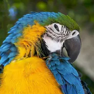

Mat Perbezaan

Menyembunyikan bahagian lapisan yang kelihatan seperti lapisan di belakangnya, supaya hanya yang berbeza kekal. Ambang menetapkan betapa berbezanya sesuatu titik untuk kekal dan Kelembutan melembutkan tepinya.
Tetapan
| Tetapan | Jenis | Julat | Lalai |
|---|---|---|---|
| Ambang | Nombor | 0 hingga 1 | 0.1 |
| Kelembutan | Nombor | 0 hingga 1 | 0.05 |